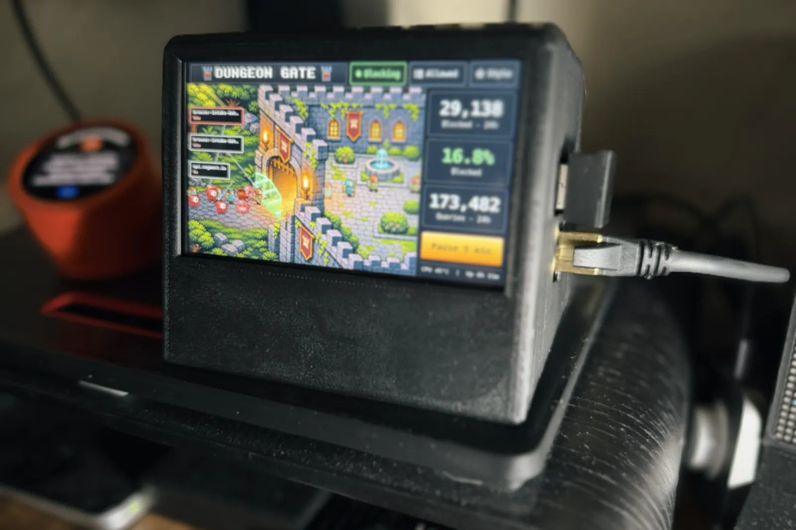

A little screen that shows what your Pi‑hole is blocking.
I put a 4.3-inch touchscreen on my Pi-hole and kept drawing dashboards for it. There are 25 now, from one giant number to a pinball table, all free. The one below is running live on made-up numbers, so go ahead and poke it.

If you’ve never run a Pi-hole
Every time a phone, laptop or TV loads something, it first asks a DNS server to turn a name like ads.example.com into an address. A DNS sinkhole is a DNS server that keeps a long list of ad and tracking names and answers “nowhere” for every one of them. The ad never loads.
It works for the whole network at once, so it covers every device in the house, including the apps and smart TVs a browser ad blocker can’t reach.
Pi-hole is the free software that does this. It runs happily on a Raspberry Pi, a credit-card-sized computer that draws about as much power as a phone charger and sits quietly on a shelf.
Sinkhole Screens puts a small touchscreen on that Pi. You watch things get blocked as it happens, and when a site breaks you fix it from the screen instead of logging in to an admin page.
- Pause for five minutes
- One tap, with a countdown and a Resume button.
- Let one site through
- Tap a blocked domain to see which list caught it, then allow it for an hour or for good. It’s press and hold, with Undo, so a stray tap does nothing.
- Nothing to leak
- The Pi-hole password never reaches the browser. The service listens on the Pi only and never changes Pi-hole’s settings.
Build one
It’s a Raspberry Pi 4 behind a 4.3" touchscreen in a case you print yourself. The print takes about six hours in PETG; putting it together takes about thirty minutes.
The final product
Drag to turn, scroll or pinch to zoom. The Pi, screen and boards are stand-ins to show the fit.
Print status: the base and retainer (rev 4) and the rev 5 shell are printed and in use. Rev 6 only raises the bottom edge of the screen window 1 mm to even out the border, and hasn’t been printed yet.
Enclosure files: CC BY 4.0, print and remix freely with credit. Print settings and assembly steps are in enclosure/README.md.
What you need
Plain Amazon links, no affiliate tags. Listings change, so check the model before you buy.
| Part | What it’s for | Where to buy |
|---|---|---|
| The essentials | ||
| Raspberry Pi 4 Model B | 2 GB is plenty for Pi-hole and the screen | Amazon ↗ |
| Waveshare 4.3" DSI touchscreen | 800×480 capacitive, ribbon to the Pi's DSI port, no driver needed | Amazon ↗ |
| GeeekPi Armor Lite cooler | Heatsink with a built-in fan; wires to pins 4, 6 and 7. The case is sized for it | Amazon ↗ |
| USB-C power supply, 5.1 V 3 A, right-angle plug | The socket sits just under the case roof, so a straight plug won’t fit. The official supply works with a 90° USB-C adapter | Amazon ↗ |
| Ethernet cable | Any patch cable long enough to reach your router. Wi‑Fi works too, but a DNS server is happiest on a wire | |
| microSD card, 16 GB or more | To install Raspberry Pi OS (and to keep as a spare if you boot from SSD) | Amazon ↗ |
| To assemble the case | ||
| Soldering iron with insert tips | To press the heat-set inserts in. Any iron works with the right tip; this kit has both. The one used in this build | Amazon ↗ |
| 4 × M3 heat-set inserts, 5.7 mm | Pressed into the shell with a soldering iron. The ones used in this build | Amazon ↗ |
| 4 × M3 × 8 countersunk screws | Hex socket (2 mm key), base into the shell from underneath | Amazon ↗ |
| M2.5 brass standoff kit | Standoffs between the screen and the NVMe board. The kit used in this build | Amazon ↗ |
| Super glue | One small drop to hold the radar board in its cradle. The one used in this build | Amazon ↗ |
| 4 × M2.5 × 25 socket screws | Retainer to the screen's corner posts. Don't go longer: 25 mm can already reach close to the panel | Amazon ↗ |
| 4 × M2.5 × 10 socket screws | Two hold the retainer to the base; two go through the cooler's thicker corners into the N02's standoffs | Amazon ↗ |
| 2 × M2.5 × 6 socket screws | Through the cooler's two thin corners into the N02's standoffs | Amazon ↗ |
Boot from an SSD
Lasts longer. Pi-hole writes its logs all day, and SD cards wear out from constant writes. An SSD is built for it. Faster. Boots, updates and the web admin all feel quicker. Fewer surprises. A worn-out SD card is the most common way a Pi-hole dies, usually without warning.
| 52Pi / GeeekPi N02 NVMe board for Pi 4 | Mounts under the Pi, powered by pogo pins on the header | Amazon ↗ |
|---|---|---|
| NVMe thermal pad (optional) | A small pad on the drive's controller chip helps it stay cool inside the case | |
| M.2 2280 NVMe SSD, 256 GB | A low-power drive such as the Patriot P300 | Amazon ↗ |
Screen sleeps when you walk away
Dark when nobody’s there. No glowing screen in an empty room or at night. Saves the screen. The backlight only runs when someone’s around, so it lasts longer and uses less power. Wakes on its own. Walk up and it’s on, no tap needed. It sees people sitting still too, not just moving.
| HLK-LD2410C radar sensor | Sees people even sitting still | Amazon ↗ |
|---|---|---|
| Female-to-female jumper wires | Five of them, from the radar to the Pi's header. The ones used in this build | Amazon ↗ |
| LD2410C | Pi pin | |
|---|---|---|
| VCC | 2 | 5 V |
| GND | 14 | ground |
| OUT | 16 | GPIO 23 |
| RX / TX | 8 / 10 | optional, for tuning over serial |
Install with sudo PRESENCE=1 ./install.sh. Without a sensor the screen just stays on. Tune the range in Hi-Link’s phone app if it sees too far.
Put it together
18 stepsInstall it on your Pi
You need
- A Raspberry Pi running Pi-hole v6
- Raspberry Pi OS with the desktop (Bookworm or later)
- An 800×480 touchscreen
The installer adds a small Python service and a full-screen Chromium window. Python standard library only, nothing loaded from the internet.
Building the case? Do all of this on the bench, at the “Set it up on the bench” step of Put it together, before the stack goes in the case. The shell seals in the microSD slot.
Starting from a fresh Pi?
- Flash Raspberry Pi OS (64-bit) with desktop with Raspberry Pi Imager. Set a hostname, user, Wi‑Fi and time zone, and enable SSH.
- With the Pi unplugged, connect the screen's ribbon to the DISPLAY port, then power on. No driver needed.
- SSH in, turn on Desktop Autologin in
sudo raspi-config, then update:sudo apt update && sudo apt full-upgrade -y. - Reserve the Pi's IP address in your router (DHCP reservation).
- Install Pi-hole:
curl -sSL https://install.pi-hole.net | bash, thenpihole setpassword. - Set your router's DNS to the Pi. If the Pi is ever off, set it back to Automatic.
The full guide, including booting from an SSD, is in the README.
- Get the code on the Pi
git clone https://github.com/gsylvest/pihole-dash-themes.git && cd pihole-dash-themes - Run the installer as your desktop user
sudo ./install.sh - In Pi-hole’s web admin, create an app passwordSettings → Web interface / API (switch to Expert if you don’t see it)
- Save it on the Pi and paste it when asked
read -rs -p "Paste app password: " P; echo; printf '%s' "$P" | sudo tee /etc/pihole-dash/app-password >/dev/null; unset P; sudo chmod 600 /etc/pihole-dash/app-password; sudo systemctl restart pihole-dash - Pick a design on the screen under Style
Make your own design
A design is two files in app/themes/: a JavaScript file that draws it and a CSS file that styles it. Copy hifi to start; it’s about 70 lines. Test it in any browser with ?demo&theme=yourid, no Pi needed.
window.PiSkins.add("myid", {
mount(el) { /* build it once */ },
render(el, m) { /* every second: m.data.blocked,
m.ticker, m.paused … */ },
unmount() { /* stop animations */ },
}, "My Design", "One-line description", thumb);